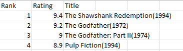
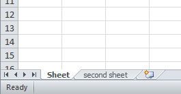
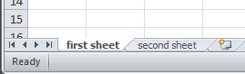
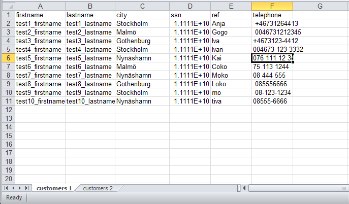
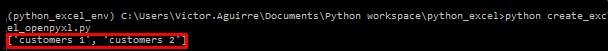
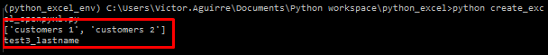
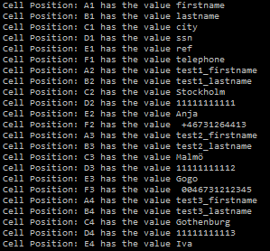
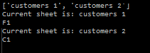
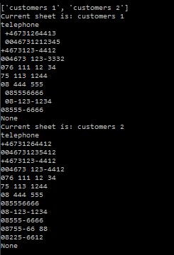

Create Excel Files With Python
First we are going to create a csv file using the build-in csv module, after that we will proceed to use a third party library to create a xlsx file.
Creating a CSV file¶
To be able to work with this type of file we are going to import CSV in the following way
1 | |
CVS Module¶
the CVS module includes all necessary methods built-in some of which are:
- csv.reader
- csv.writer
- csv.DictReader
- csv.DictWriter
with this method we can edit, modify and manipulate the stored data in a csv file.
Initial preparation¶
First we will need to prepare the file so it can be run with python namefile.py for that we add the if __name__ == "__main__"
1 2 3 4 5 6 7 | |
Name of the file, header and data¶
Now, we proceed to define some variables, the name of the file with filename, later the headers ( or the name of the columns) with header and provide some data with data
1 2 3 4 5 6 7 8 9 10 11 12 13 14 | |
Function to write on the file¶
The next step will be create a function that write the data on the file,
this function will have 3 parameters, header,data, and filename.
Inside this function we will write the first line of the file with the content of header, this will give the name to the columns and later with a for loop we will write the data.
1 2 3 4 5 6 | |
so the full, first version of the script will be, notice that there is a call to the function writer after the variable data is defined.
1 2 3 4 5 6 7 8 9 10 11 12 13 14 15 16 17 18 19 20 21 22 23 24 25 | |
And the result will be like:

Updating a CSV files¶
To update this type of file and in this case we will need to create a new function named ‘updater‘ that will just take the filename as a parameter.
1 2 3 4 5 6 7 | |
In this function:
- We open the file define in
filenameand we are going to called it ‘file’. - Save all the information from that file in a variable called
readData, cvs.DictReader - the next line
readData[0]['Rating'] = '9.4'is hard-coding the value 9.4 in the ‘Rating’ column. - the last line will tell the function
writerthat we are executing an update ( this option is not yet define in the functionwriterthat will be the next step) - finally we add a call to the function
uodaterafter the call to the functionwriter
1 2 3 4 5 6 7 8 9 10 11 12 13 14 15 16 17 18 19 20 21 22 23 24 25 26 27 28 29 30 31 32 33 | |
Create the option for update¶
Now, we need to modify the function writer to be able to receive an extra parameter, and inside, some modifications to handle these options for “write”
and “update”.
- lets add the extra parameter, this will be called option
1 2 | |
- Inside we are going to create a decision loop to execute some part of the code depending of the the parameter option
1 2 3 4 5 6 7 8 9 10 11 12 13 14 | |
More information about DictWriter here but basically here is use to write a row with the field names.
so with all this changes we will have a script that look like this:
1 2 3 4 5 6 7 8 9 10 11 12 13 14 15 16 17 18 19 20 21 22 23 24 25 26 27 28 29 30 31 32 33 34 35 36 37 38 39 40 41 42 | |
The xlsx File¶
This will be an enhancement of the previous part, that doesn’t mean previous part is not a solution, just that this solution will include openpyxl which is a all in one solution to work with worksheets, loading, updating m renaming and deleting them.
Basic terminology¶
- WorkBook is the name for a an Excel file in
openpyxl. - A workbook consist of sheets( default is 1 sheet). sheets are referenced by their names.
- A Sheet consist of rows ( horizontal lines) starting from the number 1 and columns ( vertical lines) starting the letter A.
- Rows and columns result in a grid and form cells which may contain some data ( numerical or string value) or formulas.
First Steps with openpyxl¶
First we need to install openpyxl this can be done using pip
1 | |
For the most basic usage, this been creating a new workbook with just one sheet
Create a workbook¶
To create a workbook we can use the function Workbook()
1 2 | |
now, we need to create the first sheet, the following statement is just for the first sheet
1 2 3 4 | |
by default the name of the sheet will be “sheet” and a number, so the first sheet will be “sheet”, the second “Sheet1”, etc.
Now, we have the workbook and the first sheet, what about the second sheet?, To create the second sheet and all the following sheets, we use create_sheet("name of the sheet")
1 2 3 4 5 | |

We can use the create_sheet("name of the sheet") and by defautl the sheet will be created after the previous sheet, but if we want to insert the sheet in a specific spot we can use create_sheet("name of the sheet",0) in this case this sheet will be insert in the first spot.
At any moment we can change the title of the sheet using .title as follow
1 2 3 4 5 6 7 8 | |

Save the workbook¶
To save the workbook, first we need to give it a name dest_filename = "name of the file", later, we use the function save(filename="name of the workbook")
1 2 3 4 5 6 7 8 9 10 11 12 13 14 15 | |
For more details or tutorial we can visit openpyxl documentation
we just saw how to create a workbook, now, for this example, we are going to focus in manipulate a workbook that already exist, for that reason we will create one called “Customers1.xlsx” and continue working on it
Working with xlsx files¶
Now, we are going to work with an existing file called “customers1.xlsx”, this look like this:

The file contain 6 columns and 11 rows, We are going to import it and:
- Print the sheets name
- save the current sheet on the variable
current_Sheet - print the value of the second column and 4 row (B4).
1 2 3 4 | |
the result:

We got the file, and display the sheets names, now step 2 and 3, Save the current sheet in a variable and print the value of the cell B4.
1 2 3 4 5 6 7 | |

there is hardcoded values in this script which make it not that flexible, but we can make modifications in the future, for now we are going to do the following:
- Read the file
- Get all sheet names
- Loop through all sheets
- In the last step, the code will print values that are located in B4 fields of each found sheet inside the workbook.
1 2 3 4 5 6 7 8 9 10 | |
Next, We will use the string 'ABCDEF' to create a loop through the content of each sheet.
1 2 3 4 5 6 7 8 9 10 11 12 13 14 15 | |

Rudimentary way to find content of a column¶
The idea will be find the content of the column named “telephone” and display its content. For that we will start by creating a function that will hold the loops, this loops will look row by row and column by column until we found the column named “telephone”
1 2 3 4 5 6 | |
now with the function, we can create a loop that iterate over the different sheets looking for the specific column that we are looking for
1 2 3 | |
so the script including this new function will be:
1 2 3 4 5 6 7 8 9 10 11 12 13 14 15 16 17 18 19 20 | |

so, with few modification and the creation of the second functions we have
1 2 3 4 5 6 7 8 9 10 11 12 13 14 15 16 17 18 19 20 21 22 23 24 25 26 27 28 | |
